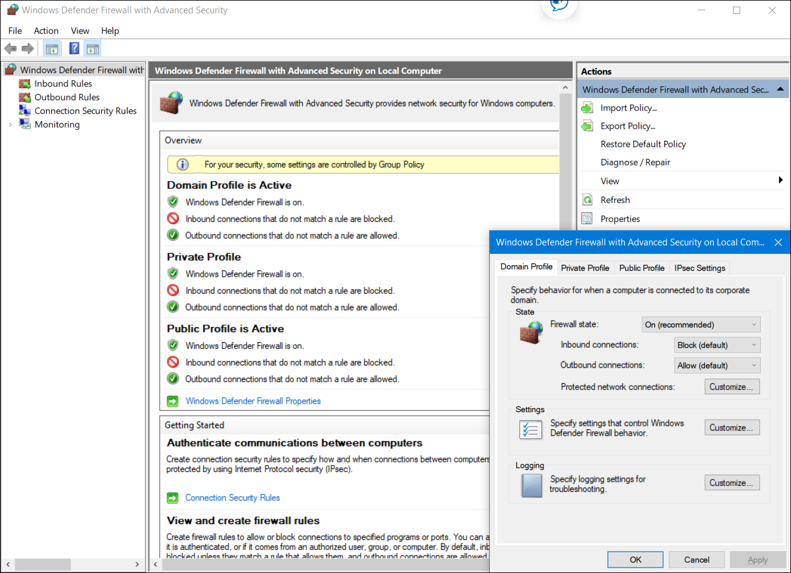

22.1.1 Amenazas a terminales.
La palabra terminal tiene varias definiciones. Para los fines de este curso, definiremos los terminales como hosts en la red que pueden tener acceso a otros hosts de la red y viceversa. Esto obviamente incluye computadoras y servidores, pero muchos otros dispositivos también pueden tener acceso a la red. Con el rápido crecimiento de Internet de las Cosas (Internet of Things IoT), otros tipos de dispositivos ya son terminales de la red. Esto incluye cámaras de seguridad conectadas en red, controladoras, incluso bombillas y electrodomésticos. Cada terminal es un posible lugar que el software malicioso tiene para obtener acceso a una red. Además, las nuevas tecnologías, como la nube, amplían los límites de las redes empresariales para incluir sitios en Internet de los que las empresas no son responsables.
Los dispositivos que tienen acceso remoto a las redes mediante VPN son también terminales que se deben tener en cuenta. Estos terminales podrían inyectar malware en la red VPN desde la red pública.
Los siguientes puntos resumen algunos de los motivos por los que el malware sigue siendo un desafío importante:
Porcentaje de Spam Malicioso

22.1.2 Seguridad de terminales
Normalmente, los medios de comunicación cubren los ataques de red externos hacia redes empresariales. Estos son algunos ejemplos de dichos ataques:
Se necesitan diversos dispositivos de seguridad de la red para proteger el perímetro de la red contra el acceso exterior. Como se ve en la figura, estos dispositivos pueden incluir un router fortalecido que proporciona servicios de VPN, un firewall de última generación (ASA en la figura), un dispositivo de IPS y servicios de autenticación, autorización y contabilidad (servidor de AAA en la figura).

Sin embargo, muchos ataques se originan dentro de la red. Por lo tanto, proteger una LAN interna es casi tan importante como proteger el perímetro externo de la red. Sin una LAN segura, los usuarios dentro de una organización permanecen susceptibles a las amenazas de la red y las interrupciones que pueden afectar directamente la productividad y el margen de ganancias de una organización. Si un atacante se infiltra en un host interno, este puede ser el punto de partida para que obtenga acceso a dispositivos esenciales del sistema, como servidores e información confidencial.
Específicamente, hay dos elementos internos de la LAN para proteger:
Este capítulo se centra en la protección de los puntos terminales.
22.1.3 Protección contra Malware basada en host.
El perímetro de la red se expande todo el tiempo. Las personas tienen acceso a recursos de la red corporativa con dispositivos móviles que utilizan tecnologías de acceso remoto, como la VPN. Estos mismos dispositivos también se utilizan en redes públicas y domésticas con protección mínima o inexistente. El software antivirus/antimalware y los firewalls basados en host se utilizan para proteger estos dispositivos.
Software Antivirus/Antimalware
Se trata de software que se instala en un host para detectar y mitigar virus y malware. Algunos ejemplos son Windows Defender Virus & Threat Protection, Cisco AMP for Endpoints, Norton Security, McAfee, Trend Micro, entre otros. Los programas antimalware pueden detectar virus por medio de tres enfoques diferentes:
Muchos programas antivirus son capaces de proporcionar protección en tiempo real analizando los datos al mismo tiempo que los terminales están siendo utilizados. Estos programas también analizan en busca de malware existente que podría haber ingresado en el sistema antes de ser reconocible en tiempo real.
A la protección antivirus basada en hosts también se la conoce como basada en agentes. El antivirus basado en agentes se ejecuta en cada máquina protegida. Los sistemas antivirus sin agentes realizan análisis en host desde un sistema centralizado. Los sistemas sin agentes se han popularizado en entornos virtualizados en los que varias instancias de sistemas operativos se ejecutan en un host simultáneamente. Si se ejecutan antivirus basados en agentes en cada sistema virtualizado, es posible que se consuman mucho los recursos del sistema. Los antivirus sin agentes para hosts virtuales comprenden el uso de un dispositivo virtual de seguridad especializado que hace tareas de análisis optimizadas en los hosts virtuales. Un ejemplo de esto es VMware’s vShield.
Firewall basado en host
Este software se instala en un host. Limita las conexiones entrantes y salientes a conexiones iniciadas por ese host solamente. El software de firewall también puede evitar que un host se infecte e impedir que los hosts infectados propaguen malware a otros. Esta función se incluye en algunos sistemas operativos. Por ejemplo, Windows incluye "Windows Defender Firewall with Advanced Security", como se muestra en la figura.

Otras soluciones son producidas por otras empresas u organizaciones. Las herramientas Linux iptable y TCP Wrappers son algunos ejemplos. Los Firewalls basados en hosts son discutidos con más detalles posteriormente en este módulo.
Suites de seguridad basadas en host
Se recomienda instalar un conjunto de productos de seguridad basados en host en las redes domésticas y comerciales. Estas suites de seguridad basadas en host incluyen antivirus, anti-phishing, navegación segura, sistema de prevención de intrusiones basado en host y capacidades de firewall. Estas diversas medidas de seguridad proporcionan una defensa en capas que protegerá contra las amenazas más comunes.
Además de la función de protección proporcionada por los productos de seguridad basados en host, está la función de telemetría. La mayoría del software de seguridad basado en host incluye una sólida funcionalidad de registro que es esencial para las operaciones de ciberseguridad. Algunos programas de seguridad basados en host enviarán registros a una ubicación central para su análisis.
Hay muchos programas y suites de seguridad basados en host disponibles para usuarios y empresas. El laboratorio de pruebas independiente AV-TEST proporciona revisiones de alta calidad de protecciones basadas en host, así como información sobre muchos otros productos de seguridad.
Busque en Internet la organización AVTest para obtener más información sobre AV-TEST.
22.1.4 Protección contra malware basada en la red.

Las nuevas arquitecturas de seguridad para la red sin fronteras enfrentan los retos de seguridad haciendo que los terminales utilicen elementos de análisis de la red. Estos dispositivos proporcionan muchas más capas de análisis que las que podría ofrecer un solo terminal. Los dispositivos de prevención de malware basados en la red también son capaces de compartir información entre ellos para permitir que se tomen mejores decisiones.
La protección de terminales en una red sin fronteras puede lograrse usando técnicas basadas en la red y basadas en host, como se mostró en la imagen. Los siguientes son ejemplos de dispositivos y técnicas que implementan las protecciones de host en el nivel de la red.
Estas tecnologías funcionan en colaboración mutua para brindar más protección que la que pueden ofrecer los conjuntos de productos basados en host, como se vió en la figura.